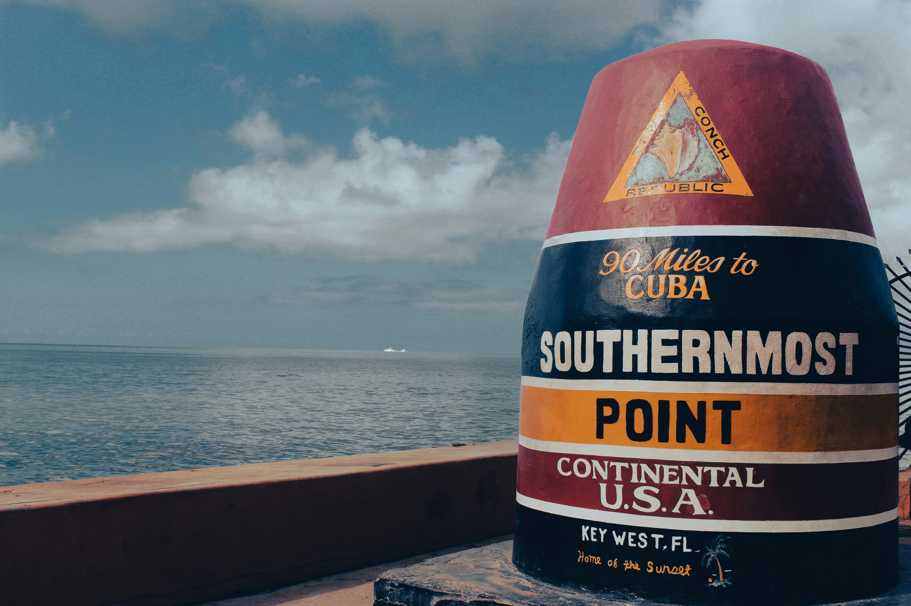
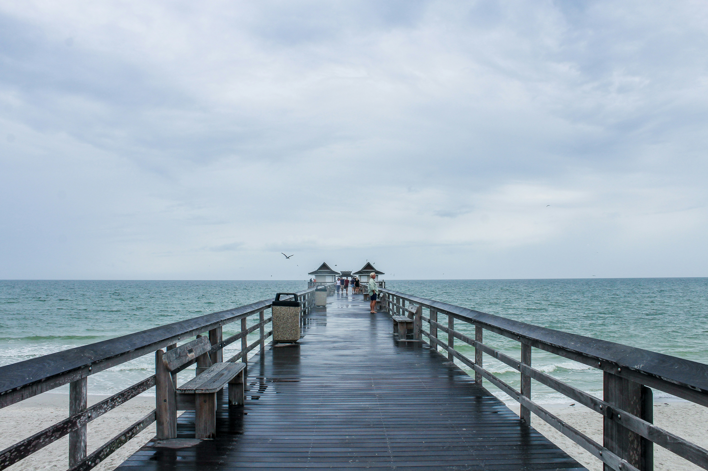
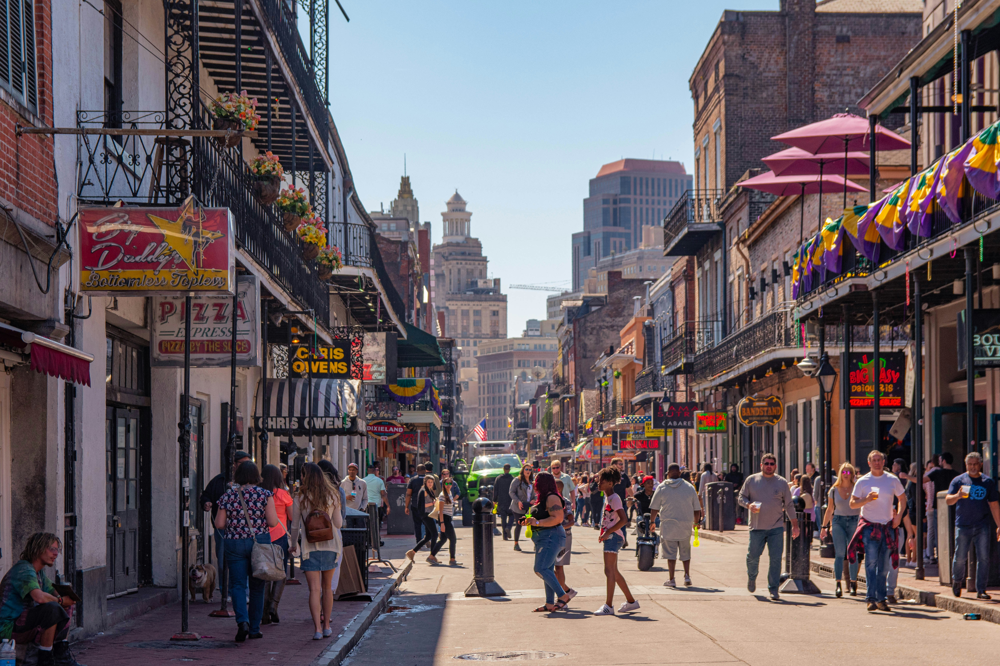
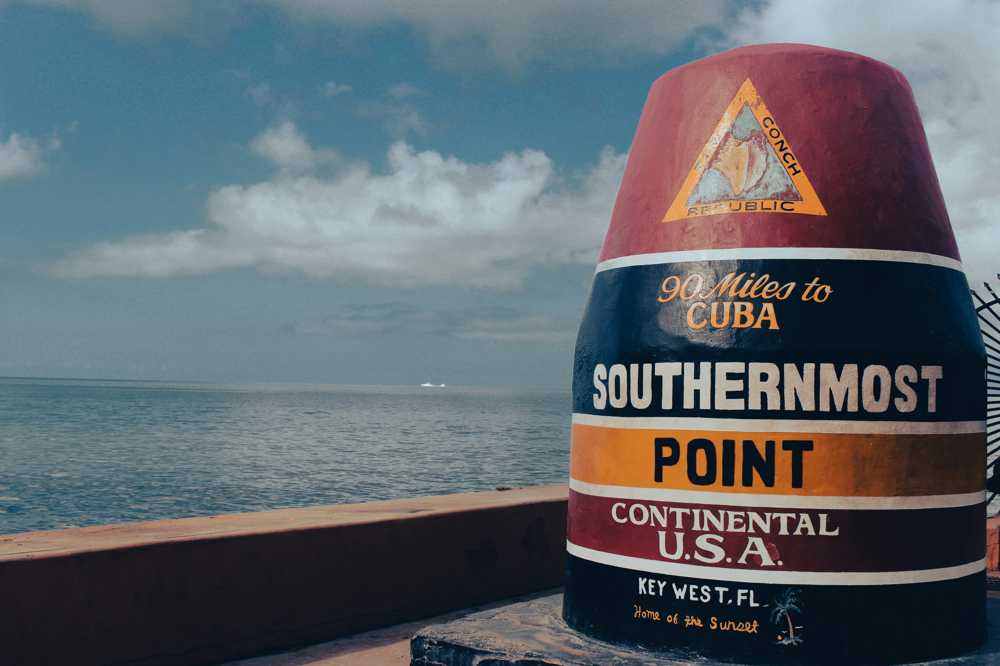
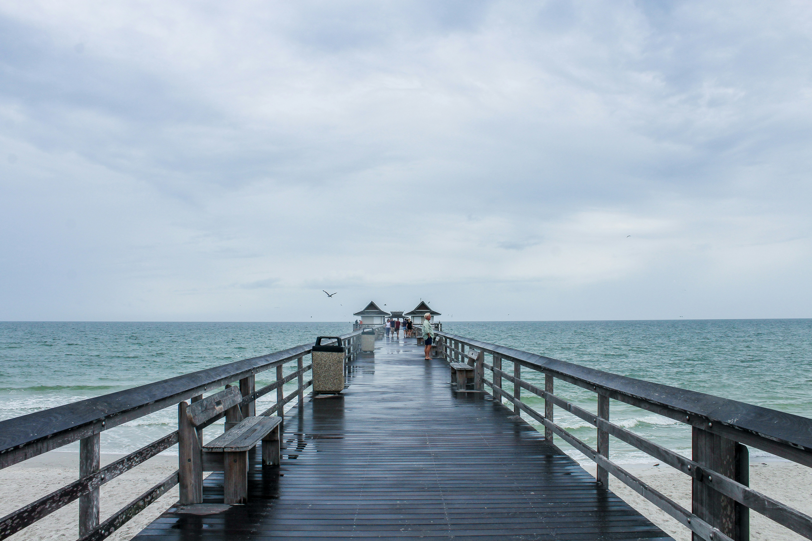
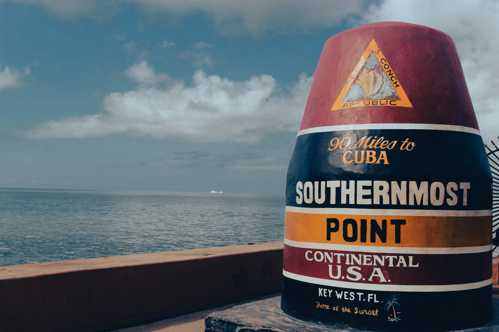
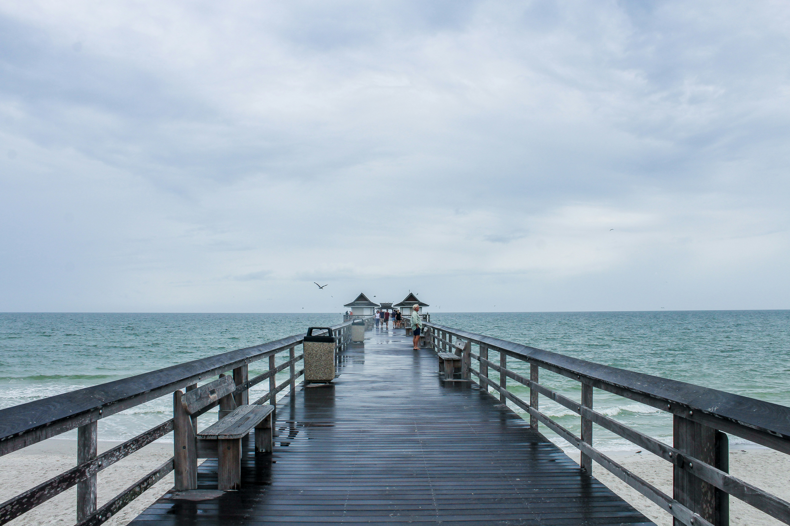

☀️ Sarthak Basu’s Florida, Louisiana & Arkansas Explorer 🌩️
Sunny, hot, humid — with a 99% chance of thunderstorms and excitement!
👋 Meet Sarthak
I’m Sarthak Basu — a sun-chaser who loves 100+ degrees, good food, and places that feel alive. I created this site to share the magic of Florida, Louisiana, and now Arkansas — with thunder included.
🌞 Florida – The Sunshine Dream
Orlando: Theme park capital with Disney, Universal, and warm vibes.
Miami: International energy, Latin food, palm-lined streets.
Key West: Quirky island with snorkeling, sunsets, and Hemingway lore.
Naples: Relaxing beaches, upscale shops, and golden skies.
☀️ Weather tip: Expect 100°F, full sun… and maybe a 4pm thunderstorm.


🎷 Louisiana – Soulful and Alive
New Orleans: Jazz in the streets, beignets, and soul food.
Lafayette: Cajun dancing, spicy eats, and warm culture.
Baton Rouge: LSU pride, riverside fun, and more gumbo.
🔥 Culture tip: Rain doesn’t stop the music. Bring an umbrella and your appetite.

🌳 Arkansas – Natural State Heat
Little Rock: River trails, southern charm, and summer sizzle.
Hot Springs: Historic baths, forest hikes, and boiling sun.
Fayetteville: College vibes with Ozark heat and humidity.
🌡️ Hotness alert: Arkansas joins the club — 100°F days and steamy nights included.
⭐ Sarthak’s Top Picks
Top City (Florida): Orlando – nonstop fun
Top City (Louisiana): New Orleans – jazz, food, and soul
Top City (Arkansas): Hot Springs – literal heat + cool history
 


